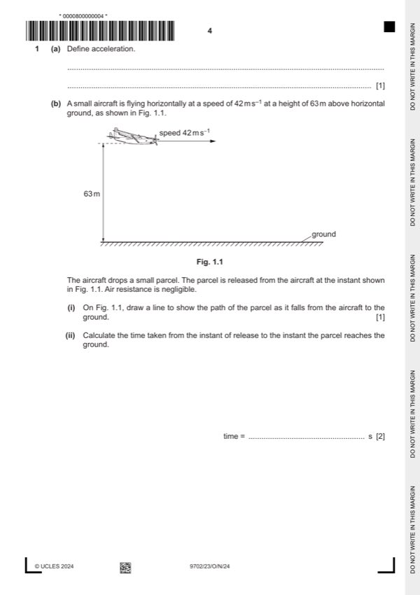

Question 1

Original paper page 4
Part 1(a) — solution
- [B1] Obtain/use: rate of change of velocity
Mark points
- [B1] Obtain/use: rate of change of velocity
Part 1(b)(i) — solution
- [B1] Obtain/use: curved path from aircraft to ground, starting horizontal at aircraft and then with increasing negative gradient as it moves
Mark points
- [B1] Obtain/use: curved path from aircraft to ground, starting horizontal at aircraft and then with increasing negative gradient as it moves
Part 1(b)(ii) — solution
- s = ut + ½at2 C1
Mark points
- s = ut + ½at2 C1
Part 1(b)(iii) — solution
- [A1] Obtain/use: v2 = 2 9.81 63
Mark points
- [A1] Obtain/use: v2 = 2 9.81 63
Part 1(b)(iv) — solution
- [A1] Obtain/use: speed = 55 m s–1
Mark points
- [A1] Obtain/use: speed = 55 m s–1